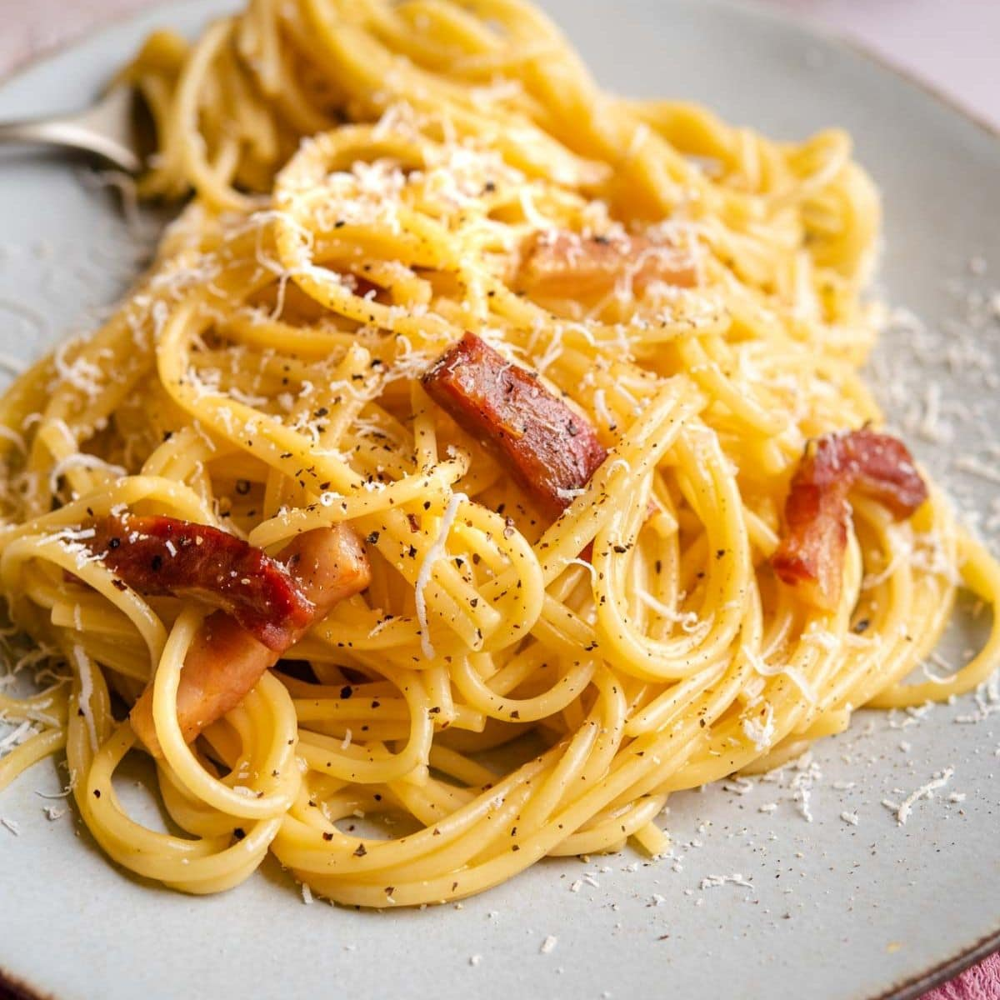

Italian Meatballs in Tomato Sauce (Polpette al Sugo) Tender Italian meatballs simmered slowly in a rich tomato sauce until juicy and infused with flavor — classic comfort food, perfect with crusty bread or pasta.
The key to a silky, non-scrambled sauce is temperature control — remove the pan from the heat before adding the egg mixture, and use the residual heat of the pasta to cook it gently. Reserve extra pasta water, as different eggs and cheese absorb liquid differently. This dish waits for no one — serve it the moment it's tossed.
BACK TO THE HOME